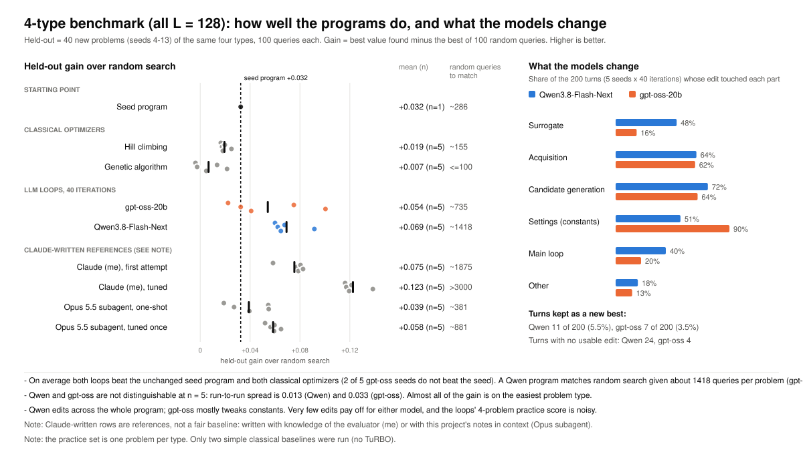
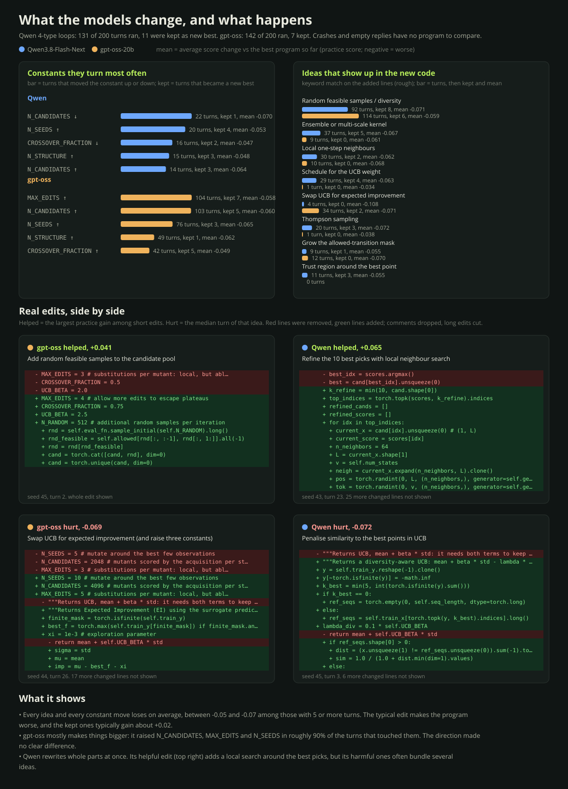

LLM-written Bayesian optimization / experiment record
Plain-loop experiments
Connecting
/
No snapshot yet
00
Summary: 4-type benchmark

00
What the models change: real edits

01
Iteration tree
Seed program
Kept (new best)
Worse (discarded)
Failed
Path to the best program
R· iteration
No runs found
The tree appears when a campaign has been exported.
Drag to pan · wheel to zoom · click to inspect · double-click to fold
03
What the models try
Each turn the model edits the best program so far. Every edit is compared with that program and credited to the parts it touched (one turn can touch several). Left: how often each part was touched and how those turns ended. Right: the same turns in order, one row per part and one column per iteration; click a square to open that program.
Kept (new best)
Worse (discarded)
Failed (crashed, or no usable edit)
03
Build slots & resource pools
04
0
Automated checks
05